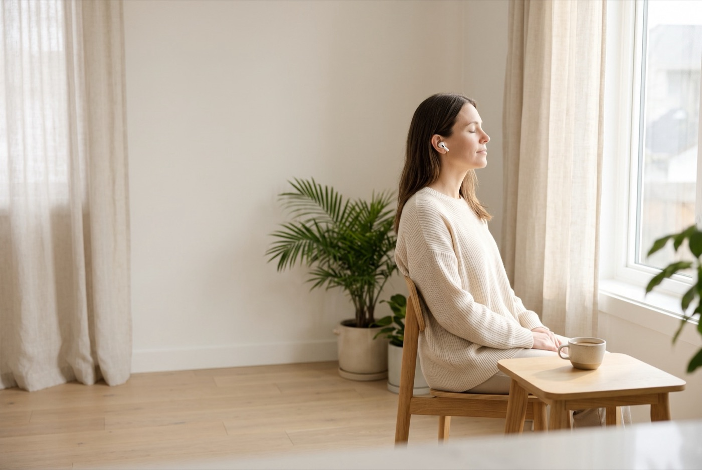
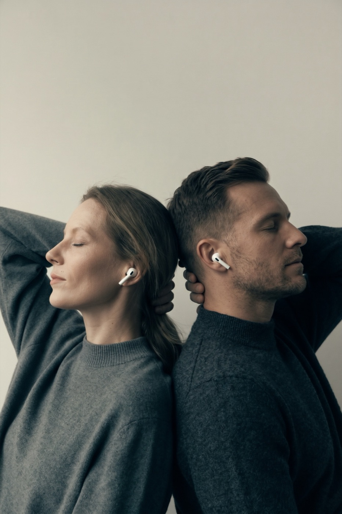

Duruş Takibi
Başınız uzun süre öne eğik kaldığında nazikçe hatırlatır. Kilit Ekranı'ndan ya da Siri'yle başlatın.
Nodly, AirPods'unuzun hareket sensörleriyle başınızın açısını takip eder, hareketleri yavaşça yönlendirir ve tekrarları sizin yerinize sayar. Hareket verisi cihazınızda işlenir.
App Store'dan indiriniPhone ve iPad için · Uyumlu AirPods ile, ya da onlarsız

Nasıl çalışır
Nodly kulaklığın hareket sensörlerini kullanır. Kamera ya da ek bir cihaz gerekmez.
Tam karşıya bakın ve birkaç saniye sabit durun. Nodly bu duruşu 0° olarak alır.
Hedef aralığa geldiğinizde Nodly sesle ve titreşimle haber verir, tekrarı sizin yerinize sayar.
Neler var

Başınız uzun süre öne eğik kaldığında nazikçe hatırlatır. Kilit Ekranı'ndan ya da Siri'yle başlatın.

Kısa nefes egzersizleri ve ekrandan uzaklaştıran iki dakikalık göz molası. Bunlar için AirPods gerekmez.

Seri günleriniz ve pratik yaptıkça toparlanan masanız. Geçmişiniz iCloud ile cihazlarınız arasında eşitlenir.
Gizlilik ve güven
Hareket verisi telefonunuzda işlenir ve ham hareket kaydı tutulmaz. Hesap açmanız gerekmez.
Hareketler yavaş ve rahat olmalı. Bir şey ters gelirse hemen durun; Nodly sizi asla zorlamaz.
Nodly bir wellness uygulamasıdır; hiçbir rahatsızlığı teşhis etmez ya da tedavi etmez. Boynunuzla ilgili bir rahatsızlığınız varsa önce bir sağlık profesyoneline danışın.
Yasal
Hesap yok, hareket verileriniz cihazınızdan çıkmaz. Anonim kullanım istatistiklerini yalnızca izin verirseniz toplarız. Reklam, takip ve veri satışı yok.
Tamamını okuyunNodly aylık ya da yıllık abonelikle sunulur; uygun kullanıcılara 7 gün ücretsiz deneme vardır. Aboneliğinizi App Store hesap ayarlarınızdan istediğiniz zaman iptal edebilirsiniz.
Tamamını okuyunHareketleri yavaş ve yalnızca rahat hissettiğiniz aralıkta yapın. Ağrı, baş dönmesi ya da uyuşma hissederseniz hemen durun.
Tamamını okuyun